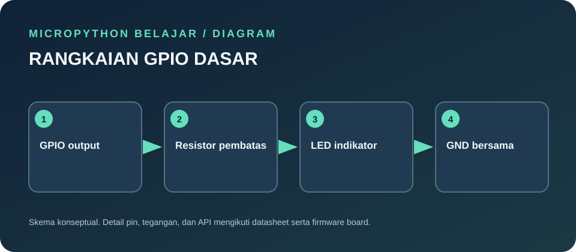

LEVEL DASAR · ARTIKEL 11
Sensor dan aktuator
Sensor mengubah fenomena fisik menjadi sinyal yang bisa dibaca. Aktuator mengubah perintah menjadi aksi seperti gerak, cahaya, atau suara.

Memahami sinyal sensor
Sensor dapat menghasilkan sinyal analog, digital, pulsa, atau data melalui protokol. Sebelum memilih kode, identifikasi jenis sinyal, tegangan kerja, pin, dan format datanya.
Sensor digital
Sensor digital dapat dibaca sebagai input GPIO jika level logikanya kompatibel. Sensor I²C atau OneWire membutuhkan driver/protokol yang sesuai.
Relay dan beban eksternal
GPIO mikrokontroler tidak dirancang untuk menyuplai beban besar. Gunakan modul driver, transistor, MOSFET, atau relay yang tepat. Beban induktif membutuhkan proteksi seperti diode flyback sesuai rangkaian.
Jangan menyambungkan motor, pompa, solenoid, atau relay coil langsung ke GPIO. Pisahkan catu daya beban dan mikrokontroler sesuai rancangan, serta pastikan ground dan proteksi benar.
from machine import Pin
from time import sleep
aktuator = Pin(5, Pin.OUT)
def set_aktuator(aktif):
aktuator.value(1 if aktif else 0)
set_aktuator(True)
sleep(2)
set_aktuator(False)Pola rekayasa yang baik
- Pisahkan fungsi pembacaan sensor dan kendali aktuator.
- Validasi rentang data sensor.
- Tentukan kondisi aman ketika sensor gagal.
- Jangan mengandalkan satu pembacaan noisy untuk keputusan kritis.